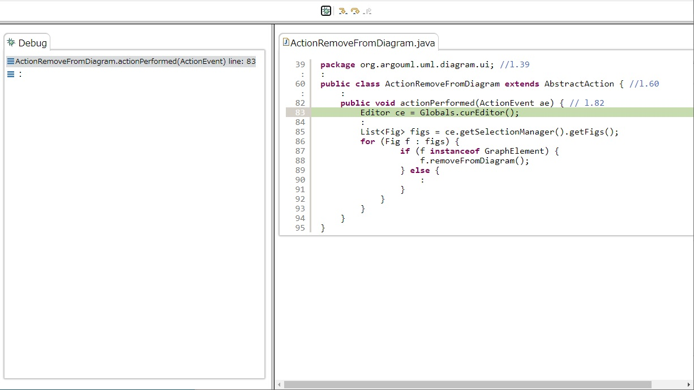

実験の後半ではオープンソースソフトウェアのソースコードから課題に関係ある部分を抜き出してきたものを， 実際の動きがわかるようにデバッグ画面の形式で提示しています． まず，デバッグボタンを押してデバッグ実行を開始して下さい．
そうすると以下のような画面になり，左側にデバッグビューが表示され，実行中の行が薄緑色で強調表示されます．
ここで左から2つ目のステップ・イントゥボタンを押すと呼び出し先に移り，デバッグビュー上のスタックにも呼び出し先メソッドが積まれます．

各ボタンの説明は以下の通りです．